Diseñamos y desarrollamos apps y juegos para iPhone. Nuestro primer lanzamiento es Iara: River of Lanterns.
Nuestro primer lanzamiento
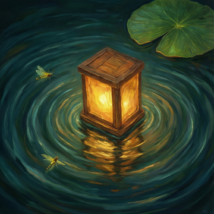
Guía una linterna por cinco ríos reales de la Amazonía y llévala a casa, hasta Iara, la guardiana de las aguas en el folclore brasileño.
Un toque empuja la linterna. Ranas, caimanes, jaguares y el delfín rosado aparecen cada uno en el río donde realmente viven, y cada río te cuenta algo verdadero sobre él. En el modo Zen el río está a oscuras, nada ataca, y tu luz despierta lo que vive allí.
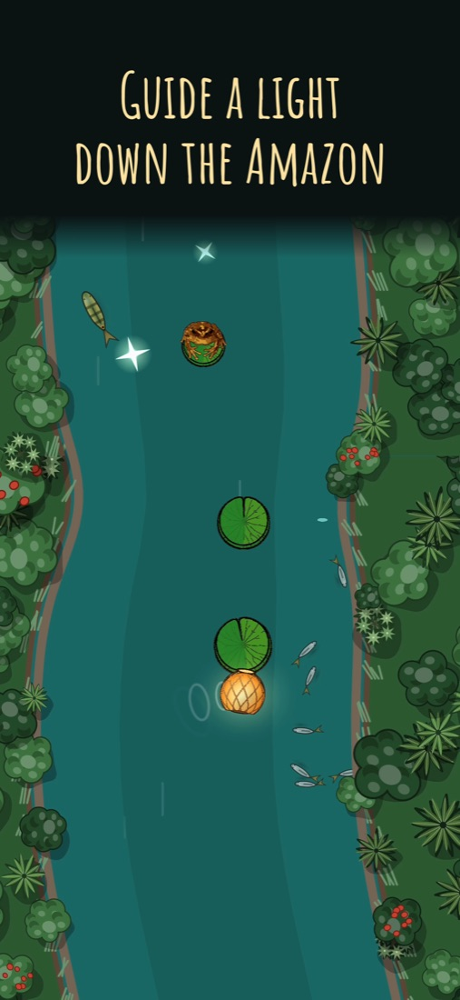
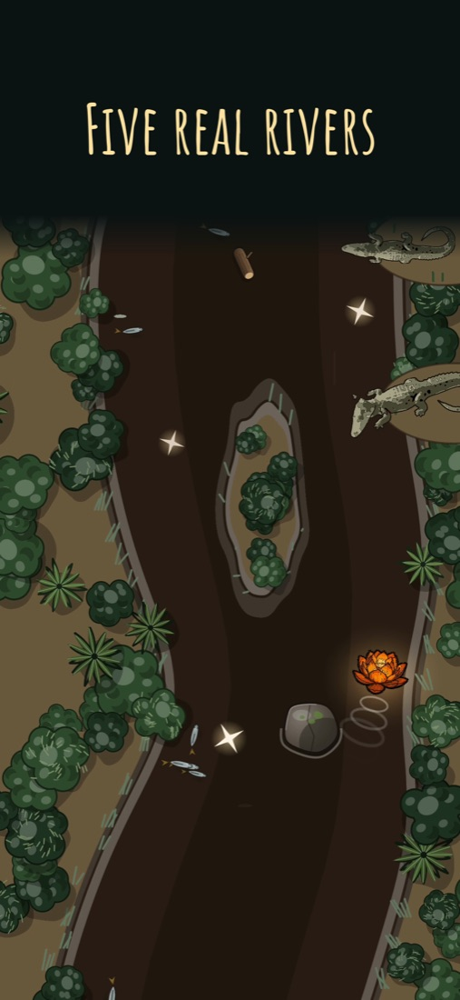
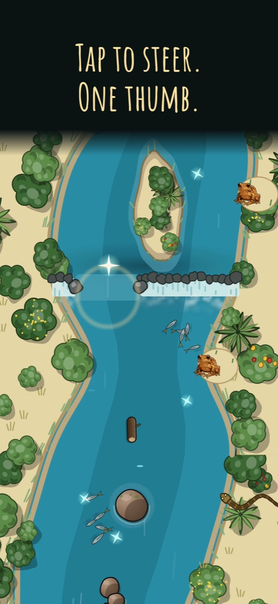
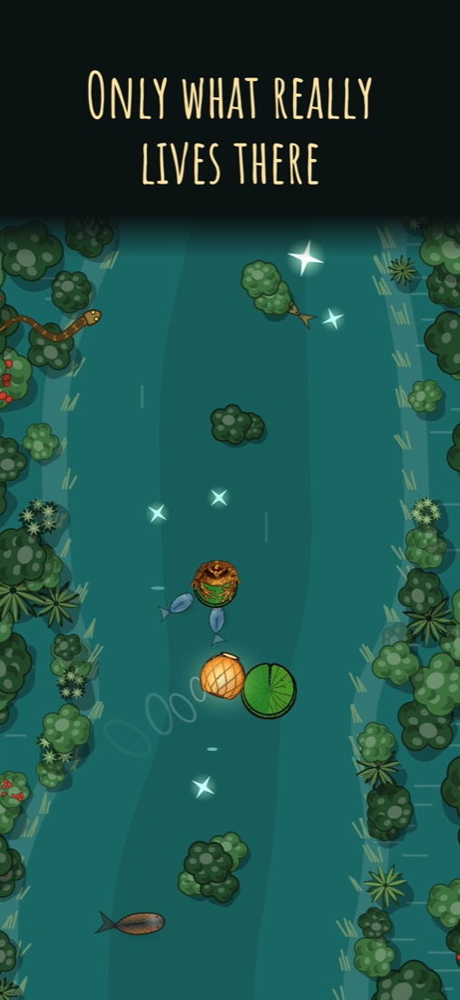
En el juego ahora
Veinticinco niveles en cinco aguas reales, cada una con su color, sus orillas y sus animales.
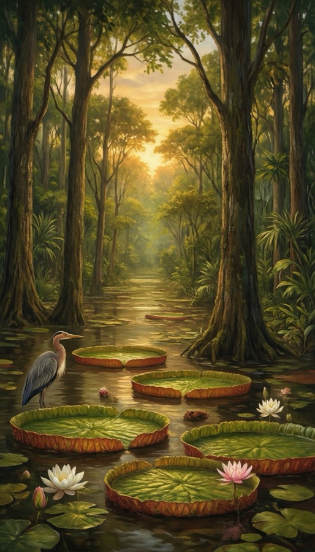
La selva que el río inunda cada año
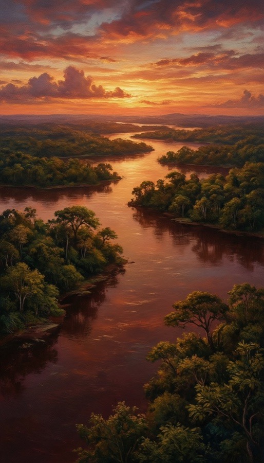
El río del color del té
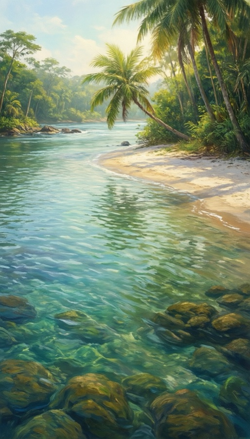
Agua clara y arena blanca
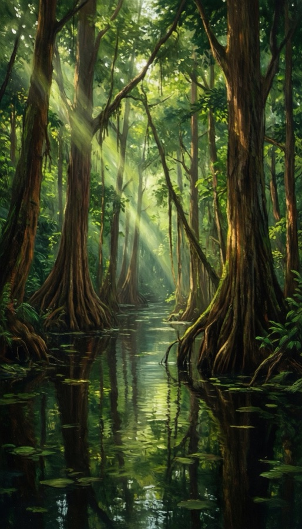
Donde los árboles están de pie en el río
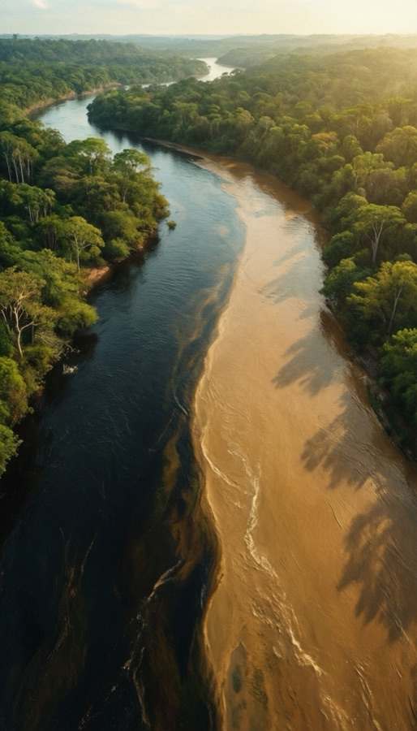
Dos ríos que no se mezclan
Próximamente
Después de la Amazonía, la linterna sigue su viaje: seis travesías de 25 ríos cada una, por Brasil y Sudamérica. Cada una es un lugar real, con lo que de verdad vive allí.
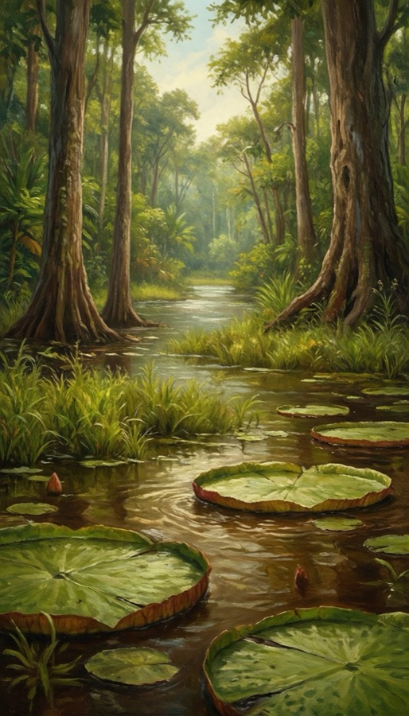
Los lagos, los rápidos, el barro y el mar
Mamirauá · Xingu · Madeira · Marajó · Rio Branco
El humedal más grande del mundo
Rio Paraguai · Rio Cuiabá · Rio Miranda · Baías e corixos · Nhecolândia
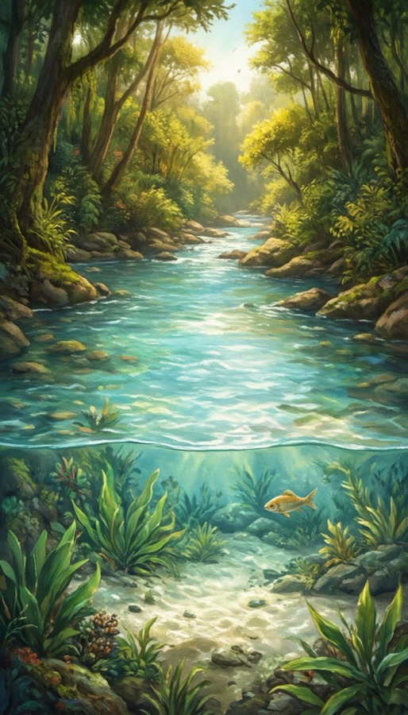
Del sertón a las grandes cataratas
São Francisco · Araguaia · Bonito · Jalapão · Iguaçu
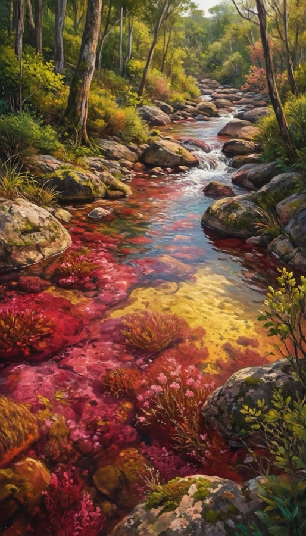
Granito, llanos, un río de cinco colores
Orinoco · Los Llanos · Caño Cristales · Canaima · Kaieteur
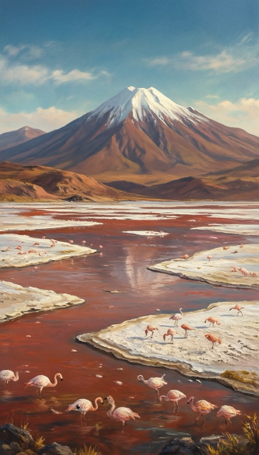
Los lagos de altura, el río sagrado, la bajada a la selva
Titicaca · Laguna Colorada · Urubamba · Manu · Magdalena
De los esteros del Iberá a los glaciares
Iberá · Paraná · Uruguay · Valdivia · Patagonia
Hacemos apps y juegos para iPhone, cada uno construido en torno a una idea clara. Hay nuevos títulos en desarrollo.
Investigamos antes de construir y probamos antes de publicar. En Iara, cada animal, planta y dato se verificó con una fuente antes de entrar.
Nuestros productos no llevan publicidad ni rastreo, y no piden cuenta. Iara 1.0 no envía nada desde tu teléfono.